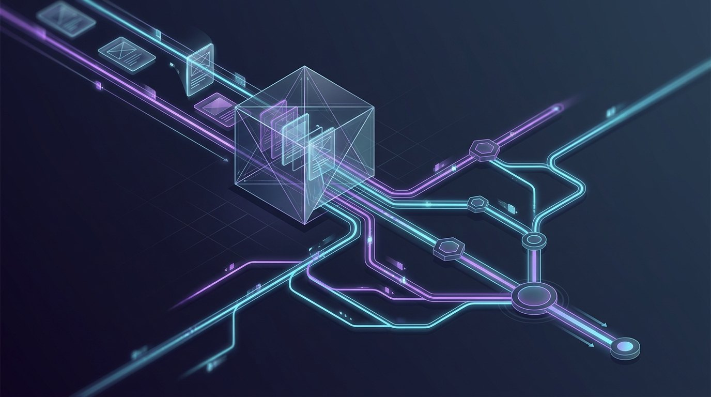

Automate issue triage, Figma-to-spec drafting, and scoped issue-to-PR delegation using Linear Agent, Triage Intelligence, the Linear Remote MCP server, and connected coding agents (Claude Code, Codex, Cursor, and Devin).

agent-safe blast-radius labels, CI verification gates, and Linear Diffs reviews.In traditional software teams, issue trackers were passive filing cabinets for humans. With Linear Agent, Triage Intelligence, and third-party coding agents acting as first-class workspace app users, every Linear issue becomes an executable prompt—turning clean product specs directly into tested, review-ready pull requests.
High-velocity teams separate signal intake, spec scoping, sandboxed implementation, and human verification into one closed loop. Every stage leaves an auditable trace inside the same Linear issue:
Linear’s 2026 agent ecosystem spans five distinct capabilities. Mixing them up wastes AI credits and causes noisy webhooks. Use this matrix to match each engineering workflow to the exact right primitive.
| Capability | What It Does Best | Trigger Mechanism | Auth & Plan Tier | Best Use Case |
|---|---|---|---|---|
| Triage Intelligence | Semantic duplicate detection, team/project routing, assignee & label suggestions with reasoning. | Automatic on every new issue entering a Team Triage queue. | Business (\$16/user/mo) & Enterprise; toggle in Settings > AI. |
High-volume bug intake, goalie rotations, backlog hygiene. |
| Linear Agent & Coding Sessions | Built-in workspace agent (Cmd/Ctrl+J), reusable Skills, Loops, and cloud sandboxes running Claude Code or Codex. |
@Linear mention, assignee delegation, or scheduled/event Loop. |
Chat & Skills on all plans; Loops & Coding Sessions use prepaid AI credits. | End-to-end issue-to-PR inside Linear with Linear Diffs review. |
| Linear Remote MCP Server | Authenticated Streamable HTTP tool server (mcp.linear.app/mcp) for reading/writing issues, projects, and docs. |
Tool calls initiated from IDE, CLI, or external AI client. | All plans; OAuth 2.1 (or Okta Enterprise) / Bearer API key. | Interactive dev loops in Claude Code, Cursor, Codex CLI, Figma Make. |
| Assigned Coding Agents | Third-party agents installed as non-billable App Users (Cursor, Codex, Devin, Sentry, Factory, Warp, Cyrus). | Delegate from Assignee menu or @agent comment mention. |
Free app-user slots in Linear; billed by the agent vendor. | Parallel background PRs using your team’s preferred external agent. |
| Customer Requests & Asks | Turns Zendesk, Intercom, Gong calls, and Slack threads into attributed issues linked to customer ARR. | 1-click support button, auto Gong transcript, or Slack @Linear. |
Slack/Asks on paid plans; Intercom/Zendesk/Gong on Business+. | Prioritizing bugs by customer impact and closing support loops. |
Open Settings > AI and add workspace + team guidance: specify your monorepo paths, branch prefix rules, commit style, and which team owns each service. Both Linear Agent and Triage Intelligence read this file on every run.
Under Settings > Integrations > Agents, grant each third-party agent access only to specific teams. For Coding Sessions, grant GitHub repo access and define a build/test environment per repo.
In Settings > Usage & limits, configure monthly AI credit caps before enabling Loops or Coding Sessions (tokens at cost + \$0.25 per 20-min sandbox). Review the usage explorer weekly.
Modern Linear issues unify specification, live agent execution telemetry, and code review in one view. Below is the 7-control interface map for running an autonomous issue-to-PR loop without losing visibility.
ENG-402 • Auto-applied billing, bug, P2.packages/billing/src/csvExport.ts formats dates in local server TZ.pnpm --filter billing test csvExport.spec.ts • Figma: Billing Export Modal v2.4 (Live)
csvExport.ts + dateFormat.ts via Code Intelligencepnpm test (42/42 passed, 0 lint warnings)@maya
eng-418-fix-csv-tz
Cycle:Cycle 44 • High Priority
Est. Cost:\$0.42 (12m sandbox)
1 Issue ID & Branch Binding: Including ENG-418 in the branch name or PR title auto-syncs GitHub PR status to Linear (In Progress → In Review → Done).
2 Triage Intelligence Card: Displays semantic duplicate matches, customer ARR rollups, and AI-inferred labels before an engineer touches the ticket.
3 Dual Owner + Delegated Agent: Separates human accountability (Maya) from agent execution (Linear Agent, Cursor, Codex, or Devin) with live sandbox cost tracking.
4 Structured Spec + Live Embeds: Combines the 5-part issue contract with live Figma frames so the agent sees both code constraints and visual intent.
5 Agent Activity Stream: Streams real-time steps—files read, failing test reproduction, patch verification, and PR creation—so you can interrupt early if the agent drifts.
6 Linked PR & Linear Diffs: Review diffs, inspect stacked PRs, and leave inline line comments directly inside Linear (desktop or mobile) to trigger an automatic agent follow-up commit.
7 Guardrail Labels & Policy Gate: Labels like agent-safe whitelist autonomous execution while human-only or security-critical block auto-delegation loops.
Unfiltered bug queues destroy engineering focus. Triage Intelligence evaluates every incoming ticket against your workspace’s entire issue history, proactively proposing teams, projects, assignees, labels, and semantic duplicates before your triage goalie opens the inbox.
Keyword search misses duplicates when customers write “export hangs on Safari” while engineers log “CSV worker deadlock in WebKit.” Triage Intelligence compares semantic meaning across open and recent issues, surfaces likely duplicates with an inline explanation, and lets you merge customer links in one click so ARR impact is preserved.
Scope Tip: In team triage settings, use Include suggestions from to limit cross-team matching to your team and sub-teams so unrelated squads don’t pollute duplicate hits.
Avoid turning on 100% blind auto-assignment on day one. Follow the proven two-tier rollout:
labels, team routing, and project—once two weeks of suggestions hit ≥85% acceptance.priority (Urgent/High), duplicate closure, and security/billing assignee in suggest-only mode for your weekly rotating Triage Goalie.bug label in Triage. The Loop uses Code Intelligence to locate the probable offending file, check recent merged PRs that touched that path, and post a 5-bullet root-cause brief as an internal comment. By the time the goalie reviews Triage, 60% of the investigation is already finished—and simple bugs can be delegated straight to a Coding Session.
A coding agent is only as reliable as the ticket you hand it. Vague one-liners produce sprawling, unreviewable diffs. Structure every delegatable issue with these five color-coded sections so Claude Code, Codex, Cursor, or Devin hits a clean PR on the first pass.
ENG-512: Add idempotency key header to webhook retry worker
1. Context: Retried Stripe/Slack webhooks in apps/api/src/workers/webhookRetry.ts currently resend without an Idempotency-Key header, causing duplicate downstream events when partners time out after 5s.
2. Constraints: Reuse existing crypto.createHash('sha256') helper in lib/hash.ts; do not add new npm packages or alter database schema migrations; maintain backwards compatibility for payloads missing eventId.
3. Acceptance Criteria: (a) Outbound retries include Idempotency-Key: wh_<sha256(eventId+attemptBucket)>; (b) Identical retries within 24h emit the exact same key; (c) Structured logs record the key without logging payload PII.
4. Verification Command: Run pnpm --filter api test webhookRetry.spec.ts && pnpm --filter api typecheck. Add unit tests covering duplicate retry stability and missing eventId fallback.
5. Out-of-Scope: Do not refactor exponential backoff intervals, dead-letter queue UI, or inbound webhook signature verification.
Name exact file paths, symbols, or Sentry stack traces. Cuts agent exploration tokens by 50%+.
State library, schema, and API boundaries up front so agents don’t install rogue dependencies.
Write 2–4 binary, observable behaviors. Avoid subjective adjectives like “clean” or “fast.”
Give the exact test, lint, and typecheck command. Agents iterate until the command exits 0.
Explicitly forbid adjacent refactors. Keeps diffs small (<250 lines) and fast for humans to review.
| Anti-Pattern (Causes Agent Drift) | Agent-Ready Rewrite (First-Pass Mergeable) |
|---|---|
| “Fix slow dashboard loading for big orgs.” | “Add pagination (limit=50) to GET /v2/org/events in events.controller.ts; keep response envelope identical; verify with pytest tests/test_events_page.py.” |
| “Update settings page to match new Figma.” | “Replace BillingToggle.tsx spacing/colors per linked Figma frame #node-412 using existing Tailwind tokens; do not touch Stripe API hooks; pass pnpm test:ui.” |
Linear’s official hosted MCP server at https://mcp.linear.app/mcp runs over Streamable HTTP (the legacy /sse transport is deprecated) with OAuth 2.1 Dynamic Client Registration. Connect it to pull rich issue context into local IDEs or delegate directly from Linear’s assignee menu.
# Add official Linear Remote MCP (Streamable HTTP)
claude mcp add --transport http linear-server \
https://mcp.linear.app/mcp
# Authenticate via OAuth 2.1 in session
/mcpEvery issue lookup, status move, and comment is attributed to your personal Linear user—never a shared bot token.
// .cursor/mcp.json (or Codex MCP config)
{
"mcpServers": {
"linear": {
"url": "https://mcp.linear.app/mcp"
}
}
}
For headless CI or read-only agent runs, pass Authorization: Bearer <LINEAR_API_KEY> instead of interactive OAuth.
| Agent / Runner | How to Trigger from Linear | Execution Environment | Ideal Ticket Profile |
|---|---|---|---|
| Linear Coding Sessions | Assign issue to Linear Agent (uses Claude Code or Codex under the hood). | Managed Linear cloud sandbox with configurable repo env, secrets & browser use. | Fast bug fixes, UI tweaks, & test coverage reviewed via Linear Diffs. |
| Cursor Cloud Agents | Assign to @Cursor app user or mention in issue comment. |
Cursor background VM synced to GitHub repo & .cursor/rules. |
Multi-file TypeScript/React refactors following existing Cursor rules. |
| OpenAI Codex | Assign via Codex Linear integration or pull via Codex CLI + Linear MCP. | Sandboxed cloud container or local CLI with repository tests. | Backend API endpoints, migrations, and parallel unit-test generation. |
| Devin / Self-Hosted Runners | Assign to @Devin (or Claude Code runners like Cyrus/Merlin) via Agent API. |
Dedicated autonomous VM or your team’s own private VPC runners. | Longer-running migrations, private-network services, or compliance repos. |
CLAUDE.md / AGENTS.md so every coding agent names branches <team>-<id>-short-slug (e.g., eng-418-fix-csv-tz) and includes Fixes ENG-418 in the PR body. Linear automatically moves the issue to In Progress on draft PR, In Review when ready, and Done on merge.
The fastest way to break an issue-to-PR loop is hand-copying requirements across Figma, Zendesk, Intercom, and Slack. Connect design and customer signals directly into Linear so agents synthesize complete, revenue-prioritized engineering tickets automatically.
@Linear on a Figma-linked issue to extract component states (default, hover, empty, error) into numbered Acceptance Criteria before delegating to a coding agent.Cmd/Ctrl + J) on a Project Overview containing raw customer requests and Figma links, and run: “Group these 14 customer requests by root cause, cross-check our codebase via Code Intelligence, and draft 4 agent-ready sub-issues with Context, Constraints, Acceptance Criteria, Verification Commands, and Out-of-Scope.”
Save each recipe below as a reusable Linear Skill, Loop, or MCP prompt so your entire engineering and product org gets repeatable, high-signal outputs.
| Recipe Name | Surface & Trigger | Exact Automation Behavior | Target Outcome |
|---|---|---|---|
| 1. Bug Root-Cause Loop | Linear Loop on bug label in Triage |
Uses Code Intelligence to find suspect commits/files, checks duplicates, and posts a 5-line triage brief. | Cuts manual goalie triage time by 60%. |
| 2. Figma Frame-to-PR | Linear Coding Session or @Cursor |
Reads embedded Figma frame + Tailwind token map, implements component states, and runs Playwright visual tests. | Pixel-accurate UI PR in <15 minutes. |
| 3. Customer Signal Digest | Linear Skill (Cmd/Ctrl+J weekly) |
Aggregates all Zendesk/Intercom/Gong Customer Requests from the last 7 days, ranked by linked ARR. | Data-backed sprint planning in 2 mins. |
| 4. Parallel Test Hardening | Claude Code / Codex via Linear MCP | Pulls all needs-tests issues in current Cycle, spawns isolated git worktrees, and opens 1 PR per ticket. |
Clears flaky/missing test debt overnight. |
| 5. Auto Release Notes | Linear Agent + Slack Workflow | Summarizes all Done issues in a completed Cycle into customer-facing changelog + internal Slack digest. |
Zero-effort release comms & CS loop close. |
Settings > AI)## Engineering & Agent Conventions
- Branch format: <team>-<id>-kebab-slug
- PR title: <type>(<scope>): <summary> [ENG-XXX]
- Always include a failing regression test before fixing.
- Never modify auth/, billing/webhooks/, or db/migrations/
without explicit human-approved label `migration-ok`.
- Keep PR diffs under 250 lines; split larger specs.Fetch Linear issue ENG-418 via linear-server MCP.
Read all linked comments and Figma notes. Create branch
eng-418-fix-csv-tz, implement strictly within Scope &
Constraints, run the Verification Command until green,
open a draft PR with "Fixes ENG-418", and post a concise
test summary back to the Linear issue.Agent-Ready Bug / Task## 1. Context
- Affected file(s) / URL / Sentry link:
- Customer Request(s) linked:
## 2. Constraints
- Reuse helpers in:
- Do NOT add dependencies or alter DB schema.
## 3. Acceptance Criteria
- [ ] Behavior 1 (observable & binary)
- [ ] Behavior 2 (edge case handled)
## 4. Verification Command
```bash
pnpm --filter <pkg> test <spec> && pnpm typecheck
```
## 5. Out-of-Scope
- Explicitly excluded modules or refactors:Autonomous coding agents multiply throughput—and can multiply mistakes just as fast if left ungoverned. Use strict delegation tiers, label-based permissions, CI verification gates, and spend caps to keep every agent PR safe to merge.
agent-safe)human-only)| Gate Layer | Enforced Policy | Where to Configure |
|---|---|---|
| 1. Label & Team Scoping | Restrict third-party App Users to approved teams; trigger automated Loops only when agent-safe is present and human-only is absent. |
Settings > Integrations > Agents + Loop filter conditions. |
| 2. Sandbox & Secret Isolation | Run Coding Sessions in ephemeral cloud sandboxes with test-only env vars; never expose production DB keys or live Stripe secrets to agent runners. | Linear Coding Session repo environment settings + secret store. |
| 3. Required CI & Diff Size | GitHub branch protection requires green unit tests, typecheck, SAST/secret scan, and a warning flag if an agent PR exceeds 350 changed lines. | GitHub Branch Protection Rules + CI workflow checks. |
| 4. Human Owner Sign-Off | The human Linear issue owner (or CODEOWNER) must review in Linear Diffs or GitHub and click Merge; agents never hold merge permissions. | GitHub CODEOWNERS + Linear Guided Reviews. |
Settings > Usage & limits. A runaway Loop triggered on every comment update can burn hundreds of runs overnight—always trigger Loops on explicit state transitions (e.g., Status → Triage or Label added), never on generic comment edits.
Linear reaches peak leverage when it acts as the central nervous system connecting customer-facing channels, design tools, coding agents, and release communications into a single automated relay.
When Zendesk or Intercom creates a Linear issue via Linear Agent, the customer record stays attached. When the coding agent’s PR merges and moves the issue to Done, Linear posts an automated resolution alert back to the support thread—closing the feedback loop without engineers ever opening Zendesk.
@Linear
Wire incident channels (#eng-bugs, #cx-escalations) so reacting with a bug emoji triggers a Slack Workflow that invokes @Linear. Linear Agent summarizes the messy 40-message thread into a single clean Triage ticket and links the thread back for status updates.
Run a 60-minute weekly paper-cut session: engineers spend 15 minutes refining 5–8 agent-safe issues with verification commands, delegate them in parallel to Coding Sessions or Cursor/Codex, and spend the remaining 45 minutes reviewing diffs and merging green PRs.
At Cycle close, invoke a saved Linear Skill to read all merged PRs and linked Customer Requests, generating two outputs: a concise customer-facing changelog and an internal executive summary with cycle velocity metrics from Linear Insights.
When an autonomous issue-to-PR loop stalls, drifts, or goes silent, diagnose it in under two minutes with this clinic—then run the 6-point pre-flight check before scaling delegation across your org.
| Symptom / Failure Mode | Root Cause | Exact Fix |
|---|---|---|
| 1. Agent ignores delegated issue | App User lacks access to a private team, or team visibility changed after install. | Open Settings > Integrations > Agents, re-grant team access to the App User, and re-assign the issue to re-fire the webhook. |
| 2. MCP connection drops / 404 | Client config still points to deprecated /sse transport instead of Streamable HTTP. |
Update endpoint to https://mcp.linear.app/mcp, run /mcp to refresh OAuth 2.1 tokens, or verify Okta enterprise authorization. |
| 3. Agent PR touches 15+ unrelated files | Ticket lacked an explicit Out-of-Scope fence and target file paths. | Close the noisy PR, add exact file paths + Out-of-Scope section + Workspace AI Guidance max-diff rule, and re-run. |
| 4. AI credits spike unexpectedly | A Loop triggers on generic comment updates or retries infinitely on failing tests. | Restrict Loop triggers to explicit state/label changes, add a spend cap in Settings > Usage & limits, and inspect the credit explorer. |
| 5. Duplicate tickets flood Triage | Triage Intelligence disabled or cross-team suggestion scope misconfigured. | Enable Triage Intelligence in Settings > AI and set Include suggestions from to cover all product teams sharing customer intake. |
| 6. PR merges but issue stays Open | Agent omitted the Linear issue ID from branch name and PR description. | Add branch format (eng-XXX-slug) and Fixes ENG-XXX requirement to both Settings > AI guidance and repo AGENTS.md. |
| 7. UI PR misses Figma spacing/states | Static screenshot attached instead of live Figma frame + token constraints. | Embed the live Figma URL (or create via Figma Make connector) and list exact design-system tokens in the issue’s Constraints block. |
Settings > AI.https://mcp.linear.app/mcp via OAuth 2.1 (per-user attribution, no shared API keys).agent-safe and human-only labels created; GitHub branch protection requires green tests + human review.Usage & limits.